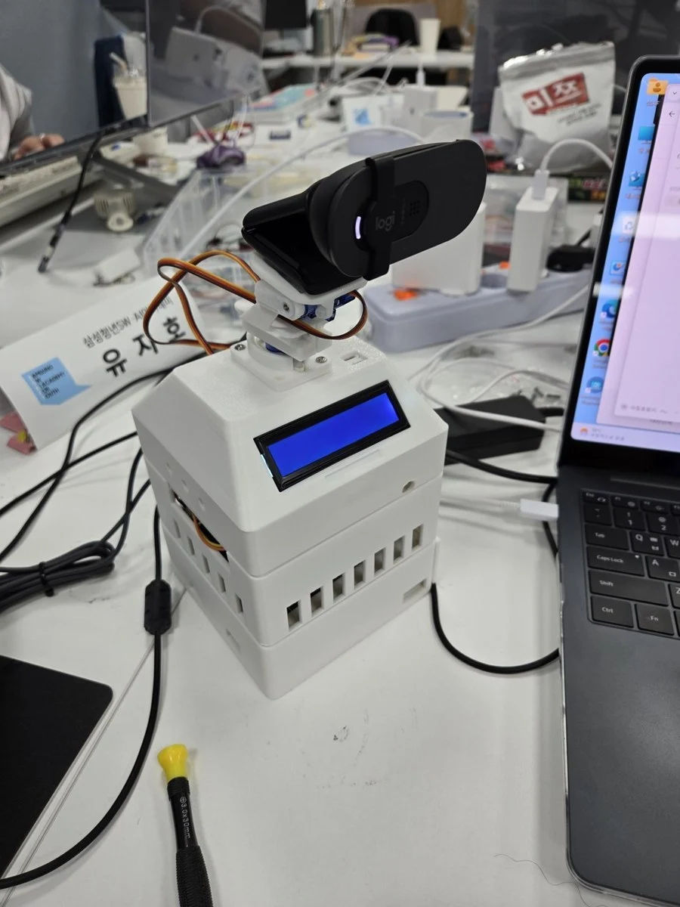

이재준 · 소프트웨어 개발자
홈캠이 놓친 웃음 6초,
세 모델을 시험했습니다.
가족이 웃으면 영상을 남기는 홈캠을 만들었습니다. 직접 녹음한 웃음을 놓친 구간에서 시작해 감지 성능을 비교했습니다. 같은 기기에서 사람도 추적해야 해 오디오 모델의 전력까지 측정했습니다.
빵긋Jetson Orin Nano · 두 사람 추적 시험
| 모델 | 웃음 F1 | 평균 전력 |
|---|---|---|
| PANNs CNN10 | 0.654 | 12.6 W |
| EfficientAT MN10 | 0.855 | 5.8 W |
F1은 같은 음성 2,064개로 평가했습니다. 전력은 오디오만 실행한 장치의 평균입니다.
프로젝트
2026
AI · 임베디드
빵긋
가족의 웃음과 박수를 영상으로 남기는 홈캠
오디오 모델 선정 · Jetson 벤치마크 · 기구 제작
서비스 기획 · Android
TINGLE
이상형 조건이 맞는 사람이 가까이 있으면 키링이 울리는 소개팅
PM · 키링 등록 절차와 프로필 공개 기준 설계, 앱 연결 테스트
프론트엔드 · 금융 웹
MOA
내 저축 계획에 맞는 예·적금 세 가지를 비교하는 웹
Vue 상품 조회 화면 · Django 로그인·로그아웃 API
게임 · UX/UI
GetOut!
집주인 한 명과 도둑 네 명이 겨루는 게임
함정 선택 UI 교정 · 6종 선택과 취소 검증소개
회계학을 전공하고 빅데이터 분석을 부전공했습니다. SSAFY에서 처음 만든 서비스는 저축 계획에 맞는 예·적금을 찾아주는 MOA였습니다.
- 교육
- 삼성 청년 AI 소프트웨어 아카데미 15기
2026.01 — 현재 - 개발 경험
- Vue와 Django로 상품 조회와 인증을 연결했습니다. 빵긋에서는 Python으로 장치 로그를 수집했고, 팅글에서는 6인 팀의 기획을 맡아 가입 절차를 설계하고 휴대폰에 키링을 연결해 시험했습니다.